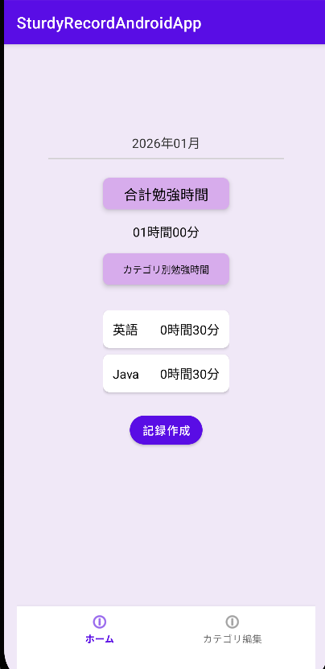
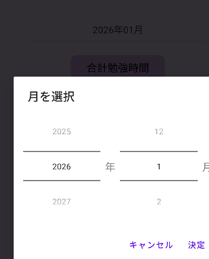
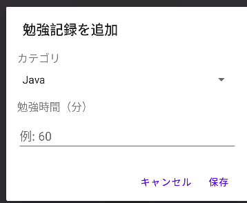
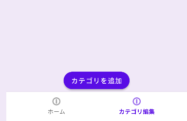
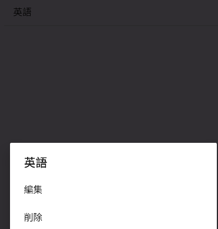

StudyRecordAndroidApp
学習時間をカテゴリごとに記録できるAndroidアプリケーション
アプリについて
言語：Java
開発環境：Android Studio
フレームワーク：Room
制作期間：4週間
Githubリンクメイン画面

機能
次ごとのカテゴリ別勉強時間表示
月毎のカテゴリ別の勉強時間を一覧表示しています
年月をタップで表示する月を変更できます
記録作成
カテゴリごとに勉強時間の記録を登録

カテゴリ編集
ボタンからの新規カテゴリ追加や、既存のカテゴリを長押しして削除や編集ができます
 制作の経緯
- 制作理由 -
内部DBであるRoomを使用した実用的なAndroidアプリケーションとして、
勉強時間記録アプリ作成に挑戦しました。
- 制作の流れ -
メイン画面とデータ
その後タスクの完了機能を追加しました。
- 工夫した点 -
Androidアプリの構成の主流である1つのActivityと複数Fragmentによる画面構成を実現しました。
Githubのプルリクエストやマージなどの基本操作学習も併せて行いました。
感想
Android StudioのEmulator周りのエラーに最も苦戦しましたが、最終的に解消でき、良い経験ができました。
他にも、Androidアプリならではの考慮すべき点が多く、実装しながら勉強ができました。
ライフサイクルやデータ監視のためのObserverクラスが印象に残っています。